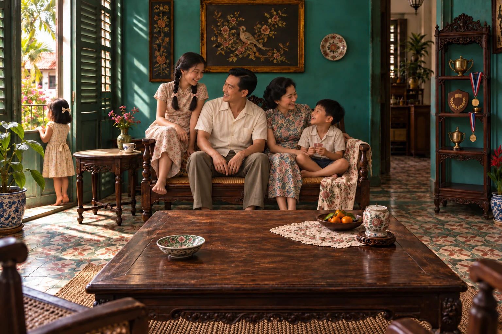
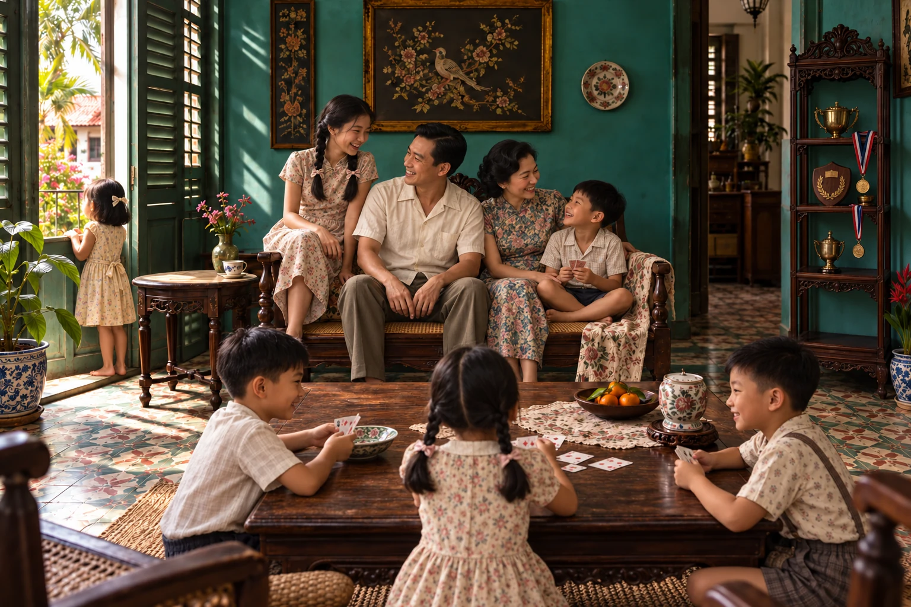

Your life is full of stories.Keep them alive.
The experience
General Memory is a private, white-glove experience that helps you hold on to the memories that matter. Through thoughtful interviews and the highest levels of craftsmanship, we turn your life stories into beautiful objects designed to last generations.
-
I
Remember
We help you reconnect with the old memories that you forgot existed but that remind you of the wonderful life you've lived.
-
II
Recover
Your life stories are spread out all across many photos, letters, and souvenirs. We work with you and your loved ones to consolidate them into a collection that will never go missing again.
-
III
Record
By the end of the journey, you will have a set of objects, custom-built to suit your preferred ways of reminiscing, that will never go missing and which will continue growing with you as you make new memories.
The shape of a memory
There are ways
to live it again.
Choose a familiar corner.
Watch the memories return.Touch the table, settee, window or shelf.
An imagined home, Singapore, c. 1955
A room full of storiesChoose any of the four objects. Its memory will gently appear in colour and stay. You can explore in any order, without leaving the room.



The memory is taking a little longer to arrive. Touch an object to try again.
Some rooms never really leave us.
Your life will suggest
its own form.
Perhaps an heirloom to hold, connected to a private world of photographs, films and stories. Perhaps a small reminder that becomes part of every day. Together, we discover what feels like you.
This room and its memories are imagined. Every commission begins with your life.Private commissions / Singapore
General
Memory
- hello@generalmemory.co
- +65 8126 1788